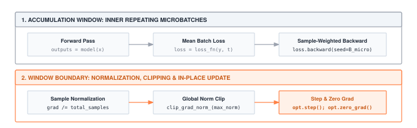

Module 08: Training
The inner loop is four lines: forward, loss, backward, step. A training system is everything wrapped around it. Schedules, clipping, evaluation modes, and checkpoints are what turn one step() into a million without human babysitting. This is where the framework becomes something you can leave running overnight.
FOUNDATION TIER | Difficulty: ●●○○ | Time: 5-7 hours | Prerequisites: 01-07
This is the capstone of the Foundation Tier. The seven components you built — tensors, activations, layers, losses, dataloader, autograd, optimizers — finally fit together into a Trainer that actually learns.
🎧 Audio Overview
Listen to an AI-generated overview.
Overview
Seven modules of components, none of them yet doing anything together. A tensor on its own does not learn. A layer on its own does not learn. Even autograd plus an optimizer does not learn — somebody has to call them, in order, on real data, again and again. That somebody is the training loop, and you are about to build it.
The loop itself is four lines: forward pass, loss, backward pass, optimizer step. Repeat. The hard part is what production wraps around those four lines. Learning rates need to start high and decay. Gradients sometimes explode and need clipping. Long runs crash and need checkpoints to resume from. Models need separate train and evaluation modes so dropout and batch norm behave correctly. By the end of this module you will have a Trainer class that handles all of this — the same architecture PyTorch Lightning and Hugging Face Transformers expose to millions of users, just smaller and yours.
Learning Objectives
- Implement a complete Trainer class orchestrating forward pass, loss computation, backward pass, and parameter updates
- Master learning rate scheduling with cosine annealing that adapts training speed over time
- Understand gradient clipping by global norm that prevents training instability
- Build checkpointing systems that save and restore complete training state for fault tolerance
- Analyze training memory overhead (4-6× model size) and checkpoint storage costs
What You’ll Build
Five pieces wrapped around the inner loop: a learning-rate schedule, a gradient clipper, the training loop itself, an evaluation pass, and checkpoint save/load.

Implementation roadmap:
Table 1 lays out the implementation in order, one part at a time.
| Part | What You’ll Implement | Key Concept |
|---|---|---|
| 1 | CosineSchedule class |
Learning rate annealing (fast → slow) |
| 2 | clip_grad_norm() function |
Global gradient clipping for stability |
| 3 | Trainer.train_epoch() |
Complete training loop with scheduling |
| 4 | Trainer.evaluate() |
Evaluation mode without gradient updates |
| 5 | Trainer.save/load_checkpoint() |
Training state persistence |
The pattern you’ll enable:
# Complete training pipeline (modules 01-07 working together)
trainer = Trainer(model, optimizer, loss_fn, scheduler, grad_clip_norm=1.0)
for epoch in range(100):
train_loss = trainer.train_epoch(train_data)
eval_loss, accuracy = trainer.evaluate(val_data)
trainer.save_checkpoint(f"checkpoint_{epoch}.pkl")What You’re NOT Building (Yet)
To keep the module focused, you will not implement:
- Distributed training across multiple GPUs (PyTorch uses
DistributedDataParallel) - Mixed-precision training (PyTorch’s Automatic Mixed Precision relies on dedicated FP16/BF16 tensor types)
- Exotic schedulers — warmup, cyclic, one-cycle, polynomial decay (production frameworks ship dozens)
You are building the core training orchestration. That orchestration is what the rest of the framework plugs into.
API Reference
The signatures you need to satisfy. Keep this open in a second tab while you implement.
CosineSchedule
CosineSchedule(max_lr=0.1, min_lr=0.01, total_epochs=100)Cosine annealing learning rate schedule that smoothly decreases from max_lr to min_lr over total_epochs.
Table 2 lists the schedule API.
| Method | Signature | Description |
|---|---|---|
get_lr |
get_lr(epoch: int) -> float |
Returns learning rate for given epoch |
Gradient Clipping
clip_grad_norm(parameters: List, max_norm: float = 1.0) -> floatClips gradients by global norm to prevent exploding gradients. Returns original norm for monitoring.
Trainer
Trainer(model, optimizer, loss_fn, scheduler=None, grad_clip_norm=None)Orchestrates complete training lifecycle with forward pass, loss computation, backward pass, optimization, and checkpointing.
Core Methods
Table 3 lists the core methods on the trainer.
| Method | Signature | Description |
|---|---|---|
train_epoch |
train_epoch(dataloader, accumulation_steps=1) -> float |
Train for one epoch, returns average loss |
evaluate |
evaluate(dataloader) -> Tuple[float, float] |
Evaluate model, returns (loss, accuracy) |
save_checkpoint |
save_checkpoint(path: str) -> None |
Save complete training state |
load_checkpoint |
load_checkpoint(path: str) -> None |
Restore training state from file |
Core Concepts
Five ideas. The training loop, epochs vs. iterations, train vs. eval mode, learning rate scheduling, and gradient clipping. Every ML framework — yours, PyTorch, JAX — implements these the same way at the conceptual level.
The Training Loop
The training loop is a four-step pattern repeated thousands of times: push data through the model (forward pass), measure how wrong it is (loss), compute how to improve each parameter (backward pass), apply the update (optimizer step). Random weights at iteration 0; a network that recognizes digits at iteration 30,000.
Here’s the complete training loop from your Trainer implementation:
The code in ?@lst-08-training-train-epoch makes this concrete.
def train_epoch(self, dataloader, accumulation_steps=1):
"""Train for one epoch through the dataset."""
self.model.training = True
self.training_mode = True
total_loss = 0.0
num_batches = 0
accumulated_loss = 0.0
for batch_idx, (inputs, targets) in enumerate(dataloader):
# Forward pass
outputs = self.model.forward(inputs)
loss = self.loss_fn.forward(outputs, targets)
# Scale loss for accumulation
scaled_loss = loss.data / accumulation_steps
accumulated_loss += scaled_loss
# Backward pass
loss.backward()
# Update parameters every accumulation_steps
if (batch_idx + 1) % accumulation_steps == 0:
# Gradient clipping
if self.grad_clip_norm is not None:
params = self.model.parameters()
clip_grad_norm(params, self.grad_clip_norm)
# Optimizer step
self.optimizer.step()
self.optimizer.zero_grad()
total_loss += accumulated_loss
accumulated_loss = 0.0
num_batches += 1
self.step += 1
# Handle remaining accumulated gradients
if accumulated_loss > 0:
if self.grad_clip_norm is not None:
params = self.model.parameters()
clip_grad_norm(params, self.grad_clip_norm)
self.optimizer.step()
self.optimizer.zero_grad()
total_loss += accumulated_loss
num_batches += 1
avg_loss = total_loss / max(num_batches, 1)
self.history['train_loss'].append(avg_loss)
# Update scheduler
if self.scheduler is not None:
current_lr = self.scheduler.get_lr(self.epoch)
self.optimizer.lr = current_lr
self.history['learning_rates'].append(current_lr)
self.epoch += 1
return avg_loss: Listing 8.1 — Trainer.train_epoch() orchestrates the inner loop: forward, loss, backward, clip, step, zero-grad, with gradient accumulation and scheduler update. {#lst-08-training-train-epoch}
Each iteration processes one batch: the model turns inputs into predictions, the loss function scores them against targets, the backward pass fills .grad on every parameter, the clipper bounds the global norm, and the optimizer applies the step. Total loss divided by batch count is the average training loss you watch to see convergence.
While this implementation reads like standard sequential Python, scaling this loop to production hardware transforms it into a highly asynchronous, choreographed dance between the host CPU (dispatching kernel instructions) and the target GPU (executing them massively in parallel).
Innocuous operations like calculating total_loss += loss.item() or printing loss values inside the inner loop force a hard synchronization block. The CPU must halt and wait for the GPU to drain its computation queue just to copy a single scalar value back across the PCIe bus. This catastrophic synchronization stalls the entire training pipeline, starving the GPU. High-performance systems meticulously defer, asynchronously accumulate, or strictly periodically sample these metrics to prevent interrupting the compute symphony.
To circumvent hard physical VRAM limits without sacrificing statistical stability, the accumulation_steps parameter introduces a profound memory-compute trade-off. If an architecture requires an effective batch size of 128 but the GPU can only harbor 32 samples at a time, setting accumulation_steps=4 serially accrues gradients over four distinct forward-backward passes. This achieves the mathematically identical optimizer update of a 128-sample batch, trading raw wall-clock time for an artificially expanded memory horizon.
Epochs and Iterations
Training operates on two timescales: iterations (single batch updates) and epochs (complete passes through the dataset). The hierarchy is what lets you reason about training progress and cost.
An iteration processes one batch: forward, backward, step. With 10,000 samples and batch size 32, one epoch is 313 iterations (10,000 ÷ 32, rounded up). Convergence typically takes dozens to hundreds of epochs, so tens of thousands of iterations.
Scale that up and the implications get real. ImageNet has 1.2M images; batch size 256 and 90 epochs is 421,920 iterations (1,200,000 ÷ 256 × 90). At 250ms per iteration, that’s 29 hours on one GPU. The same arithmetic tells you whether a hyperparameter sweep is feasible or whether you should rent more machines.
Your Trainer tracks both: self.step counts total iterations across all epochs, while self.epoch counts how many complete dataset passes you’ve completed. Schedulers typically operate on epoch boundaries (learning rate changes each epoch), while monitoring systems track loss per iteration.
Train vs Eval Modes
Neural networks behave differently during training versus evaluation. Layers like dropout randomly zero activations during training (for regularization) but keep all activations during evaluation. Batch normalization computes running statistics during training but uses fixed statistics during evaluation. Your Trainer needs to signal which mode the model is in.
The pattern is simple: set model.training = True before training, set model.training = False before evaluation. This boolean flag propagates through layers, changing their behavior:
The code in ?@lst-08-training-evaluate makes this concrete.
def evaluate(self, dataloader):
"""Evaluate model without updating parameters."""
self.model.training = False
self.training_mode = False
total_loss = 0.0
correct = 0
total = 0
for inputs, targets in dataloader:
# Forward pass only (no backward!)
outputs = self.model.forward(inputs)
loss = self.loss_fn.forward(outputs, targets)
total_loss += loss.data
# Calculate accuracy (for classification)
if len(outputs.data.shape) > 1: # Multi-class
predictions = np.argmax(outputs.data, axis=1)
if len(targets.data.shape) == 1: # Integer targets
correct += np.sum(predictions == targets.data)
else: # One-hot targets
correct += np.sum(predictions == np.argmax(targets.data, axis=1))
total += len(predictions)
avg_loss = total_loss / len(dataloader) if len(dataloader) > 0 else 0.0
accuracy = correct / total if total > 0 else 0.0
self.history['eval_loss'].append(avg_loss)
return avg_loss, accuracy: Listing 8.2 — Trainer.evaluate() flips the model to eval mode, runs forward-only passes, and reports average loss and accuracy without touching parameters. {#lst-08-training-evaluate}
Notice what’s missing: no loss.backward(), no optimizer.step(), no gradient updates. Evaluation measures current model performance without changing parameters. This separation is crucial: if you accidentally left training = True during evaluation, dropout would randomly zero activations, giving you noisy accuracy measurements that don’t reflect true model quality.
Learning Rate Scheduling
Learning rate scheduling adapts training speed over time. Early in training, when parameters are far from optimal, high learning rates enable rapid progress. Late in training, when approaching a good solution, low learning rates enable stable convergence without overshooting. Fixed learning rates force you to choose between fast early progress and stable late convergence. Scheduling gives you both.
Cosine annealing uses the cosine function to smoothly transition from maximum to minimum learning rate:
def get_lr(self, epoch: int) -> float:
"""Get learning rate for current epoch."""
if epoch >= self.total_epochs:
return self.min_lr
# Cosine annealing formula
cosine_factor = (1 + np.cos(np.pi * epoch / self.total_epochs)) / 2
return self.min_lr + (self.max_lr - self.min_lr) * cosine_factorAt epoch 0, cos(0) = 1 so cosine_factor = 1.0 and the rate is max_lr. At the final epoch, cos(π) = -1 so cosine_factor = 0.0 and the rate is min_lr. Between those endpoints the curve falls off smoothly — fast at first, slower as it bottoms out.
For max_lr=0.1, min_lr=0.01, total_epochs=100:
Epoch 0: 0.100 (aggressive learning)
Epoch 25: 0.087 (still fast)
Epoch 50: 0.055 (slowing down)
Epoch 75: 0.023 (fine-tuning)
Epoch 100: 0.010 (stable convergence)Your Trainer applies the schedule automatically after each epoch:
if self.scheduler is not None:
current_lr = self.scheduler.get_lr(self.epoch)
self.optimizer.lr = current_lrThis updates the optimizer’s learning rate before the next epoch begins, creating adaptive training speed without manual intervention.
Gradient Clipping
Gradient clipping prevents exploding gradients that destroy training progress. During backpropagation, gradients sometimes become extremely large (thousands or even infinity), causing parameter updates that jump far from the optimum or overflow into NaN. Clipping rescales large gradients to a safe maximum while preserving their direction.
The key insight is clipping by global norm rather than individual gradients. Computing the norm across all parameters √(Σ g²) and scaling uniformly preserves the relative magnitudes between different parameters:
The code in ?@lst-08-training-clip-grad-norm makes this concrete.
def clip_grad_norm(parameters: List, max_norm: float = 1.0) -> float:
"""Clip gradients by global norm to prevent exploding gradients."""
# Compute global norm across all parameters
total_norm = 0.0
for param in parameters:
if param.grad is not None:
grad_data = param.grad if isinstance(param.grad, np.ndarray) else param.grad.data
total_norm += np.sum(grad_data ** 2)
total_norm = np.sqrt(total_norm)
# Scale all gradients if norm exceeds threshold
if total_norm > max_norm:
clip_coef = max_norm / total_norm
for param in parameters:
if param.grad is not None:
if isinstance(param.grad, np.ndarray):
param.grad = param.grad * clip_coef
else:
param.grad.data = param.grad.data * clip_coef
return float(total_norm): Listing 8.3 — clip_grad_norm() rescales gradients uniformly when the global norm exceeds max_norm, preserving their relative magnitudes. {#lst-08-training-clip-grad-norm}
Consider gradients [100, 200, 50] with global norm √(100² + 200² + 50²) ≈ 229. With max_norm=1.0, the clip coefficient is 1.0 / 229 ≈ 0.00437, and every gradient is scaled by it: [0.437, 0.873, 0.218]. The new norm is exactly 1.0, but the relative magnitudes survive — the second gradient is still twice the first.
This uniform scaling is crucial. If we clipped each gradient independently to 1.0, we’d get [1.0, 1.0, 1.0], destroying the information that the second parameter needs larger updates than the first. Global norm clipping prevents explosions while respecting the gradient’s message about relative importance.
Checkpointing
Checkpointing saves complete training state to disk, enabling fault tolerance and experimentation. Training runs take hours or days. Hardware fails. You want to try different hyperparameters after epoch 50. Checkpoints make all of this possible by capturing everything needed to resume training exactly where you left off.
A complete checkpoint includes:
The code in ?@lst-08-training-save-checkpoint makes this concrete.
def save_checkpoint(self, path: str):
"""Save complete training state for resumption."""
checkpoint = {
'epoch': self.epoch,
'step': self.step,
'model_state': self._get_model_state(),
'optimizer_state': self._get_optimizer_state(),
'scheduler_state': self._get_scheduler_state(),
'history': self.history,
'training_mode': self.training_mode
}
Path(path).parent.mkdir(parents=True, exist_ok=True)
with open(path, 'wb') as f:
pickle.dump(checkpoint, f): Listing 8.4 — Trainer.save_checkpoint() pickles the full training state: parameters, optimizer buffers, scheduler, epoch/step counters, and history. {#lst-08-training-save-checkpoint}
Model state is straightforward: copy all parameter tensors. Optimizer state is more subtle: SGD with momentum stores velocity buffers (one per parameter), Adam stores two moment buffers (first and second moments). Scheduler state captures current learning rate progression. Training metadata includes epoch counter and loss history.
Loading reverses the process:
The code in ?@lst-08-training-load-checkpoint makes this concrete.
def load_checkpoint(self, path: str):
"""Restore training state from checkpoint."""
with open(path, 'rb') as f:
checkpoint = pickle.load(f)
self.epoch = checkpoint['epoch']
self.step = checkpoint['step']
self.history = checkpoint['history']
self.training_mode = checkpoint['training_mode']
# Restore states (simplified for educational purposes)
if 'model_state' in checkpoint:
self._set_model_state(checkpoint['model_state'])
if 'optimizer_state' in checkpoint:
self._set_optimizer_state(checkpoint['optimizer_state'])
if 'scheduler_state' in checkpoint:
self._set_scheduler_state(checkpoint['scheduler_state']): Listing 8.5 — Trainer.load_checkpoint() reverses the save: unpickle, restore counters and history, then rehydrate model, optimizer, and scheduler state. {#lst-08-training-load-checkpoint}
After loading, training resumes as if the interruption never happened. The next train_epoch() call starts at the correct epoch, uses the correct learning rate, and continues optimizing from the exact parameter values where you stopped.
Computational Complexity
Training cost is a function of architecture and dataset size. For a fully connected network with L layers of width d, the forward pass is O(d² × L) — matrix multiplications dominate. The backward pass has the same complexity, since autograd revisits every operation. With N samples and batch size B, one epoch is N / B iterations.
Total training cost for E epochs:
Time per iteration: O(d² × L) × 2 (forward + backward)
Iterations per epoch: N / B
Total iterations: (N / B) × E
Total complexity: O((N × E × d² × L) / B)Real numbers make this concrete. A 2-layer network (d=512) on 10,000 samples (batch size 32) for 100 epochs:
d² × L = 512² × 2 = 524,288 ops per sample
Batch operations = 524,288 × 32 = 16.8M ops per batch
Iterations / epoch = 10,000 / 32 = 313
Total iterations = 313 × 100 = 31,300
Total operations = 31,300 × 16.8M ≈ 525 billion opsAt 1 GFLOP/s (typical CPU), that’s about 525 seconds (≈ 9 minutes). A GPU at 1 TFLOP/s (1000× faster) finishes it in 0.5 seconds. The arithmetic is exactly why GPUs exist for ML: the workload is dense linear algebra, and a GPU eats dense linear algebra.
Memory complexity is simpler but just as important:
Table 4 breaks down the memory footprint component by component.
| Component | Memory |
|---|---|
| Model parameters | d² × L × 4 bytes (float32) |
| Gradients | Same as parameters |
| Optimizer state (SGD) | Same as parameters (momentum) |
| Optimizer state (Adam) | 2× parameters (two moments) |
| Activations | d × B × L × 4 bytes |
Total training memory is typically 4-6× model size, depending on optimizer. This explains GPU memory constraints: a 1GB model requires 4-6GB GPU memory for training, limiting batch size when memory is scarce.
Production Context
Your Implementation vs. PyTorch
Your Trainer and PyTorch’s training stack (Lightning, Hugging Face Trainer) share the same architecture. Production adds distributed training, mixed precision, dozens of schedulers, and a callback system. The inner loop is identical.
Table 5 places your implementation side by side with the production reference for direct comparison.
| Feature | Your Implementation | PyTorch / Lightning |
|---|---|---|
| Training Loop | Manual forward/backward/step | Same pattern, with callbacks |
| Schedulers | Cosine annealing | 20+ schedulers (warmup, cyclic, etc.) |
| Gradient Clipping | Global norm clipping | Same algorithm, GPU-optimized |
| Checkpointing | Pickle-based state saving | Same concept, optimized formats |
| Distributed Training | ✗ Single device | ✓ Multi-GPU, multi-node |
| Mixed Precision | ✗ FP32 only | ✓ Automatic FP16/BF16 |
Code Comparison
Equivalent training pipelines side by side. Same conceptual flow: build model, attach optimizer and scheduler, hand them to a trainer, loop.
from tinytorch import Trainer, CosineSchedule, SGD, MSELoss
# Setup
model = MyModel()
optimizer = SGD(model.parameters(), lr=0.1, momentum=0.9)
scheduler = CosineSchedule(max_lr=0.1, min_lr=0.01, total_epochs=100)
trainer = Trainer(model, optimizer, MSELoss(), scheduler, grad_clip_norm=1.0)
# Training loop
for epoch in range(100):
train_loss = trainer.train_epoch(train_data)
eval_loss, acc = trainer.evaluate(val_data)
if epoch % 10 == 0:
trainer.save_checkpoint(f"ckpt_{epoch}.pkl")import torch
from torch.optim.lr_scheduler import CosineAnnealingLR
from pytorch_lightning import Trainer
# Setup (nearly identical!)
model = MyModel()
optimizer = torch.optim.SGD(model.parameters(), lr=0.1, momentum=0.9)
scheduler = CosineAnnealingLR(optimizer, T_max=100, eta_min=0.01)
trainer = Trainer(max_epochs=100, gradient_clip_val=1.0)
# Training (abstracted by Lightning)
trainer.fit(model, train_dataloader, val_dataloader)
# Lightning handles the loop, checkpointing, and callbacks automaticallyThe pieces line up almost one-for-one:
- Imports — TinyTorch exposes classes directly; PyTorch uses a deeper module hierarchy. Same concepts, different organization.
- Model + optimizer — identical pattern. Both pass
model.parameters()to the optimizer so it can track what to update. - Scheduler —
CosineScheduleversusCosineAnnealingLR. Different names, same math. - Trainer setup — TinyTorch takes model, optimizer, loss, and scheduler explicitly. Lightning hides them behind a model definition +
Trainer(...). Both supportgradient_clip. - Training loop — TinyTorch makes the epoch loop explicit; Lightning hides it inside
trainer.fit(). The loop Lightning runs is the loop you wrote. - Checkpointing — TinyTorch requires manual
save_checkpoint()calls; Lightning checkpoints automatically based on validation metrics.
The core training loop pattern: forward pass → loss → backward → gradient clipping → optimizer step → learning rate scheduling. When debugging PyTorch training, you’ll understand exactly what’s happening because you built it yourself.
Why Training Infrastructure Matters at Scale
The same patterns scale up brutally. Three numbers from production:
- GPT-3 training: 175 billion parameters, 300 billion tokens, ~$4.6 million in compute. A single checkpoint is 350 GB — larger than most laptop SSDs. Checkpoint frequency is a real engineering tradeoff between fault tolerance and storage cost.
- ImageNet training: 1.2 million images, 90 epochs is standard. At 250ms per iteration (batch 256), that’s 29 hours on one GPU. Learning rate scheduling is the difference between 75% accuracy (mediocre) and 76.5% (state-of-the-art) — a difference papers are written about.
- Training instability: Without gradient clipping, roughly 1 in 50 training runs randomly diverges — gradients explode, outputs go NaN, all progress lost. A 2% failure rate is unacceptable when each run costs thousands of dollars.
Your Trainer handles all three of these at educational scale, with the same architecture the production systems use. The numbers get bigger; the loop does not.
Check Your Understanding
Before moving on, verify you can articulate each of the following:
If any of these feels fuzzy, revisit the Training Loop and Computational Complexity sections before moving on.
Five systems-thinking questions. They build intuition for the performance characteristics and trade-offs you’ll meet again in production ML — usually under a deadline.
Q1: Training Memory Calculation
You have a model with 10 million parameters (float32) and use the Adam optimizer. Estimate total training memory required: parameters + gradients + optimizer state. Then compare with SGD.
Adam optimizer:
- Parameters: 10M × 4 bytes = 40 MB
- Gradients: 10M × 4 bytes = 40 MB
- Adam state (two moments): 10M × 2 × 4 bytes = 80 MB
- Total: 160 MB (4× parameter size)
SGD with momentum:
- Parameters: 10M × 4 bytes = 40 MB
- Gradients: 10M × 4 bytes = 40 MB
- Momentum buffer: 10M × 4 bytes = 40 MB
- Total: 120 MB (3× parameter size)
Key insight: Optimizer choice changes training memory by 33%. For large models close to the GPU’s memory ceiling, SGD is sometimes the only optimizer that fits.
Q2: Gradient Accumulation Trade-off
You want batch size 128 but your GPU can only fit 32 samples. You use gradient accumulation with accumulation_steps=4. How does this affect: (a) Memory usage? (b) Training time? (c) Gradient noise?
(a) Memory: No change. Only one batch (32 samples) in GPU memory at a time. Gradients accumulate in parameter .grad buffers which already exist.
(b) Training time: 4× slower per update. You process 4 batches sequentially (forward + backward) before optimizer step. Total iterations stays the same, but wall-clock time increases linearly with accumulation steps.
(c) Gradient noise: Reduced (same as true batch_size=128). Averaging gradients over 128 samples gives more accurate gradient estimate than 32 samples, leading to more stable training.
Trade-off summary: Gradient accumulation exchanges compute time for effective batch size when memory is limited. You get better gradients (less noise) but slower training (more time per update).
Q3: Learning Rate Schedule Analysis
Training with fixed lr=0.1 converges quickly initially but oscillates around the optimum, never quite reaching it. Training with cosine schedule (0.1 → 0.01) converges slower initially but reaches better final accuracy. Explain why, and suggest when fixed LR might be better.
Why fixed LR oscillates: High learning rate (0.1) enables large parameter updates. Early in training (far from optimum), large updates accelerate convergence. Near the optimum, large updates overshoot, causing oscillation: update jumps past the optimum, then jumps back, repeatedly.
Why cosine schedule reaches better accuracy: Starting high (0.1) provides fast early progress. Gradual decay (0.1 → 0.01) allows the model to take progressively smaller steps as it approaches the optimum. By the final epochs, lr=0.01 enables fine-tuning without overshooting.
When fixed LR is better: - Short training runs (< 10 epochs): Scheduling overhead not worth it - Learning rate tuning: Finding optimal LR is easier with fixed values - Transfer learning: When fine-tuning pre-trained models, fixed low LR (0.001) often works best
Rule of thumb: For training from scratch over 50+ epochs, scheduling almost always improves final accuracy by 1-3%.
Q4: Checkpoint Storage Strategy
You’re training for 100 epochs. Each checkpoint is 1 GB. Checkpointing every epoch costs 100 GB of storage. Checkpointing every 10 epochs risks losing 10 epochs of work if training crashes. Design a checkpointing strategy that balances fault tolerance and storage cost.
Strategy: Keep last N + best + milestones
- Keep last N=3 checkpoints (rolling window):
epoch_98.pkl,epoch_99.pkl,epoch_100.pkl(3 GB) - Keep best checkpoint (lowest validation loss):
best_epoch_72.pkl(1 GB) - Keep milestone checkpoints (every 25 epochs):
epoch_25.pkl,epoch_50.pkl,epoch_75.pkl(3 GB)
Total storage: 7 GB (vs 100 GB for every epoch)
Fault tolerance:
- Last 3 checkpoints: Lose at most 1 epoch of work
- Best checkpoint: Can always restart from best validation performance
- Milestones: Can restart experiments from quarter-points
Implementation:
if epoch % 25 == 0: # Milestone
save_checkpoint(f"milestone_epoch_{epoch}.pkl")
elif epoch >= last_3_start: # Last 3
save_checkpoint(f"recent_epoch_{epoch}.pkl")
if is_best_validation: # Best
save_checkpoint(f"best_epoch_{epoch}.pkl")Production systems use this strategy plus cloud storage for off-site backup.
Q5: Global Norm Clipping Analysis
Two training runs: (A) clips each gradient individually to max 1.0, (B) clips by global norm with max_norm=1.0. Both encounter gradients [50, 100, 5] with global norm √(50² + 100² + 5²) ≈ 112. What are the clipped gradients in each case? Which preserves gradient direction better?
(A) Individual clipping (clip each to max 1.0):
- Original:
[50, 100, 5] - Clipped:
[1.0, 1.0, 1.0] - Result: All parameters get equal updates — relative-importance information is destroyed.
(B) Global norm clipping (scale uniformly):
- Original:
[50, 100, 5], global norm ≈ 112 - Scale factor:
1.0 / 112 ≈ 0.0089 - Clipped:
[0.45, 0.89, 0.04] - New global norm: 1.0 (exactly
max_norm) - Result: Relative magnitudes preserved — the second parameter still gets a 2× larger update than the first.
Why (B) is better: Gradients encode relative importance: parameter 2 needs larger updates than parameter 1. Global-norm clipping bounds the explosion while respecting that signal. Individual clipping flattens the signal, treating every parameter as equally important.
Verification: √(0.45² + 0.89² + 0.04²) ≈ 1.0.
Key Takeaways
- The inner loop is four lines; the Trainer is everything around them: Forward, loss, backward, step repeats forever. Production wraps it in schedules, clipping, evaluation modes, and checkpointing — those are what separate a toy loop from a training system.
- Sync points kill throughput: A
.item()call or a print inside the inner loop drags a scalar back across PCIe and halts the GPU. High-performance loops defer metrics or sample them periodically. - Gradient accumulation decouples memory from effective batch size: 32 samples in memory, serially accumulated 4× gives the mathematically identical update of a 128-batch — trading wall-clock time for an artificially expanded memory horizon.
- Global-norm clipping preserves gradient direction while bounding magnitude: Individual clipping flattens the signal; global-norm clipping bounds explosions without lying about which parameters need larger updates.
- Checkpoints are the fault-tolerance boundary: Saving params + optimizer state + scheduler + epoch makes a 29-hour run resumable. Every minute between checkpoints is a minute you are willing to lose.
Coming next: You just shipped the Foundation Tier. Module 09 opens the Architecture Tier with Conv2d, MaxPool2d, and the structural prior that made computer vision work — while the Trainer you just built keeps driving the loop unchanged.
Further Reading
For students who want to understand the academic foundations and advanced training techniques:
Seminal Papers
- Cyclical Learning Rates for Training Neural Networks - Smith (2017). Introduced cyclical learning rate schedules and the learning rate finder technique. Cosine annealing is a variant of these ideas.
- Systems Implication: By architecting non-monotonic learning rate schedules that enable significantly faster convergence, this work directly reduced the total end-to-end wall-clock time and the exorbitant compute-hour costs required to train large-scale models on datacenter hardware. arXiv:1506.01186
- On the Difficulty of Training Recurrent Neural Networks - Pascanu et al. (2013). Analyzed the exploding and vanishing gradient problem, introducing gradient clipping as a robust stabilization solution. The global norm clipping you implemented originates directly from this research.
- Systems Implication: While mathematically stabilizing, global gradient clipping requires an exhaustive reduction operation across all parameter gradients. In distributed training, this introduces a mandatory, global cross-GPU communication block (an
AllReduceoperation) that can severely bottleneck the pipeline right before parameter updates. arXiv:1211.5063
- Systems Implication: While mathematically stabilizing, global gradient clipping requires an exhaustive reduction operation across all parameter gradients. In distributed training, this introduces a mandatory, global cross-GPU communication block (an
- Accurate, Large Minibatch SGD: Training ImageNet in 1 Hour - Goyal et al. (2017). Demonstrated the mathematical scaling laws linking batch size and learning rate, formalizing linear warmup and distributed gradient accumulation techniques.
- Systems Implication: Provided the rigorous empirical proof that scaling batch sizes linearly allows deep models to be efficiently distributed across massive GPU clusters via Data Parallelism. This high-batch-size regime effectively masks network communication latency behind large, dense matrix multiplications, achieving peak hardware utilization. arXiv:1706.02677
Additional Resources
- PyTorch Lightning Documentation: Training Loop Documentation - See how production frameworks implement the same training patterns you built
- Weights & Biases Tutorial: “Hyperparameter Tuning” - Excellent guide on learning rate scheduling and gradient clipping in practice
What’s Next
You just shipped the Foundation Tier. Tensors, autograd, optimizers, dataloader, and a Trainer that ties them together — these are the load-bearing pieces of every modern ML framework, and you wrote all of them. The next tier is about what gets put inside the model. The training loop you built does not change.
Before moving on, the next three chapters give those Foundation pieces their first real workout. The Foundation Milestones — Rosenblatt’s 1958 Perceptron, the 1969 XOR Crisis, and the 1986 MLP Revival — are runnable recreations of the experiments that shaped early neural-network history, all driven by the Tensor, Linear layer, autograd, optimizer, and Trainer you just finished. You watch your own code fail in the same way Minsky proved it had to, then break through with the same fix Rumelhart shipped. Then, on the far side, Module 09 opens the Architecture Tier.
First: three Foundation Milestones run your Trainer on Perceptron (1958), XOR (1969), and MLP digit recognition (1986) — proof that the framework you built reproduces the history of the field. Then Module 09 opens the Architecture Tier with Conv2d, MaxPool2d, and Flatten: the layers that exploit spatial structure in images and make computer vision possible. Same Trainer.train_epoch() you wrote here will train the CNNs you build there, with no code changes. That’s the payoff of separating orchestration from architecture.
Preview — how the Trainer you just built gets reused:
Table 6 traces how this module is reused by later parts of the curriculum.
| Module | What It Adds | Your Trainer In Action |
|---|---|---|
| 09: Convolutions | Spatial layers for images | Same train_epoch() trains CNNs unchanged |
| Milestone: MLP | Complete MNIST digit recognition | Trainer orchestrates the full pipeline |
| Milestone: CNN | Complete CIFAR-10 classification | Vision models trained with your infrastructure |
Get Started
- Launch Binder - Run interactively in browser, no setup required
- View Source - Browse the implementation code
Binder sessions are temporary. Download your completed notebook when done, or clone the repository for persistent local work.